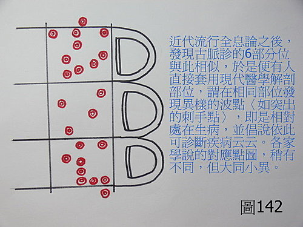
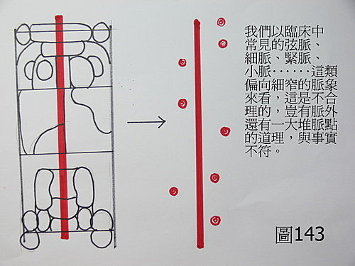
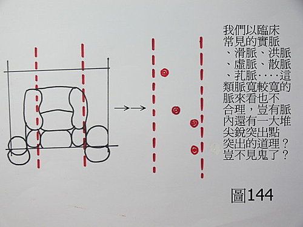
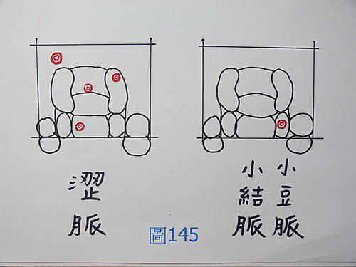

基礎概論 64：全息脈法的本質，就是國王的新衣，事實上是不存在的東西
作者：陳建元
或問：
請教falo老師一個問題，老師對全息脈法的批評主要是它直接對到西醫的病名，而且太強人所難。但是很多人用的脈法似乎也是全息脈法（譬如張國養老師），據網路上的資料，全息脈法似乎把脈位擴張了一倍，一個手指看兩個臟腑。而我給全息脈法醫師看病的經驗也確實對臟器病變的描述很準確，甚至可以查出西醫儀器所查出的變化。那如果全息脈法真的不好的話，臨床效果應該出不來才對，但是事實似乎相反。還是其實全息脈法雖然比您所說的古脈法難，但是如果脈藥之間的聯繫及病機的判斷正確的話，全息脈法也是一個可治病的學問。不是質疑您，只是覺得這兩種脈法或許可以合作，對病患會更好也不一定。
答：
對於全息脈法，我一直是客氣的點一下而已，這是為了讓別人好下台。要講實話的話，全息脈法的本質，就是國王的新衣，事實上是不存在的東西（也就是拿不出來的意思），如何能拿來實際使用呢？
全息脈法難嗎？一點都不難？你學古脈法要學到四診能合參、弄通醫理脈理藥理，可能需要10年，而全息脈法我下面說一下，10分鐘你就會了，會難嗎？一點都不難，一個手指頭也不是只看兩個臟腑而已，而是一個手指頭可看七八個臟腑器官。




〈圖141、142〉就是全息脈法，使用的方法就如同圖上所寫的，主要就是找看那邊有特異點（主要是突出點，就像盲人用的盲字帖一樣有突出的點暈），就是那邊的器官有問題，這就是全息脈的基本設定，想像起來是很美好，但事實呢？事實只是空中的大餅，就如〈圖143、圖144〉那樣（已經涵蓋90％的脈形了），那種脈形在現實上是不存在的，自己可以多找人來試試，大多數的人，脈的內外都是平面的，不可能會再有什麼突出的脈波點的，脈也不是有兩條、三條、四條‥‥‥互相平行的直行或橫行在寸口上，讓你可以右邊候什麼、中間候什麼、左邊候什麼，或是在每部脈中又分成上下3～5段，根本是痴人說夢話，在理論上可以這麼想，但在實務上，手指頭的寬度是有極限的（古人不是笨蛋，脈分三部，對應上三個指頭，其實也極限了），我直接講白好了，國王沒穿衣服就是沒穿衣服，就是這麼回事而已，不是只有你把不到而已，就是按摩院裡面那些指感很強的盲人，也把不出這些東西（盲眼人專注在觸感，指感皆非常敏銳），何不拿去試試呢？而連他們都把不出來的東西，世上還有誰能把得出來呢？這不是還在夢遊說夢話是什麼？
回歸現實來看，臨床上脈象會有點刺型態呈現出來的，大抵只有兩種情況：
1. 如果你摸起來，脈點會散開成幾個點的，這種脈叫做「澀脈」，即脈理醫理學 33.6：澀脈。
2. 如果摸起來像芝麻般，只在某處有一個突出點，這種脈叫做「小結脈」，〈圖145〉，這兩種脈在古脈法中都有特殊的意義。但突出點位在何處，並不一定對應哪些器官，可自己統計一下，會發現其實是不一定的，有時只是巧中而已（但很容易因此而誤解真有全息脈這回事）。問答錄 141：全息脈法的問題。
除非病人的脈象中兼有澀脈或是小結脈，否則虛脈、滑脈、實脈、細脈、緊脈‥‥‥90％以上的脈象，脈的內外都是平滑的，不可能有突出的脈點點刺，更不可能在這些脈點上，又各自有虛脈、滑脈、實脈、細脈、緊脈，這更是無稽，自己多試即知。
另外，人手指上的感受器也是有極限的，當兩個點只要太靠近（小於0.2～0.3公分，自己可用兩個筆尖試試看），摸起來就是感覺一個點了，這是人的天生極限，無法再細分了，而這些虛脈、滑脈、實脈、細脈、緊脈‥‥‥，也幾乎都要有0.5～1公分的判斷距離，判斷起來才會比較明確，以上之種種，皆是人體天生上的限制，是無法漫天喊價的。（有的人說每部脈中可再分成九宮，而每一宮中又自分九宮，相乘81宮以應人體全息，或是每部脈中有一八卦，相乘64卦以應人體全息，豈不是還在睡夢中！）
30年前有全息脈法嗎？那時候是沒有的，雖然學脈的人程度有高低，但脈法就是「脈法」，只有一種，是不分家的，你們現在聽我說「古脈法」，這是我講的，我故意這樣講，是用來強調現今的脈法已經走樣了（由踏實走上神話不實際）。
上一輩的人都是很聰明的（包括你說的張老），主體都是古脈法（譬如張老編的脈學講解中，28脈、診家直訣、瀕湖脈學‥‥‥等都一律清一色是古脈法），因為只有古脈法才能把臟器病變描述的很準確，甚至可以查出西醫儀器所查出的變化（譬如有子宮肌瘤、膽結石、前列腺腫大、‥‥‥甚至癌腫，30年前尚未有全息脈法的時候，部分的老中醫就已經有這種能耐了，並不是有全息脈法之後，才學會這樣的診斷能耐），但其實這背後都是有嚴謹脈理醫理的，並不是機械式的對應而已。而老一輩的人對全息脈法這種東西，大都只是拿來裝飾門面的而已，並不會太認真，也就是說近年來大家都在講這個話題啊，我沒講的話好像矮了別人一截，所以也拿來附和兩句，以增廣見聞而已（隨貨贈送的而已，譬如買青菜送兩根辣椒一樣、學生來學脈的時候就順便講一下），這就好像我學過鐵砂掌，可一掌碎石，可是現在流行太極拳，我和人家太極推手時，就這麼往對方頭上一敲，把對方敲昏了，裁判問我為什麼？我說不知道啊，我是打太極拳啊！如果真如你說的，你的醫師真有本事把臟器病變描述得很準確，甚至可以查出西醫儀器所查出的變化，更進一步治好它，那是不用考慮的，用的就是古脈法了（28脈這些皆是古脈法，並不是全息脈法）。
而現代流行的全息脈法是什麼呢？講難聽一點就是國王的新衣，沒有的事硬要說出一個柄來，大家你看我我看你，為國王的新衣歌頌，卻沒有人敢直指真相，就像我上面說的那樣，硬劃出一些莫名奇妙的臟腑脈位點要你去摸，而當你摸不出來的時候，教學的人就把「佛、道、神」這些無形的通通扯進來和泥巴，講些江湖渾話，說有智慧的人才能把到脈點，或是中醫是大「道」，業障太深者無法感應脈氣，改善的方法就是打坐、參禪、唸經、養心、練氣功，之後不但能把到，手指還會自動感應要拿那瓶藥給患者吃，患者的病就會好，
故意把整個中醫誤導到神通方向去，嗟夫～做事不踏實，脈書不看，醫理不參，整天疑神疑鬼，捕風捉影，盡搞些中醫義和團狗屁倒灶的事，你覺得這樣的中醫還有明天嗎？（不是沒有仙佛那些事，但宜就事論事，是就是，不是就不是，不要什麼事情都牽拖到那邊去不是辦法。）
另外據我所知的，當初在馬光亞教授的那個年代，脈法都是密傳的，甚至要在神前發誓不對第三者說出，有全息脈這種說法後，一些脈師剛好找到擋箭牌，只想給徒弟魚，不想給釣竿（也就是一方面教徒弟，但一方面又要預防徒弟超越他），或是覺得匪人誤傳的時候，也搬出這套說詞，因為老師把脈會準，徒弟自然也就信以為真了，等到師父走了，徒弟各自獨立之後，雖然覺得這些東西的邏輯怪怪的，卻也不敢直接挑明，於是又這樣不知所以的教給後學，其實以上的種種情感因素，都給後來有心要學中醫脈診的人，又築上了一道道的圍牆。
【引用請先來信告知徵求同意，若有涉及販售營利等商業行為，版權所有拷貝盜用必究。】
【藥王脈學講壇】http://blog.xuite.net/drjychen/twblog